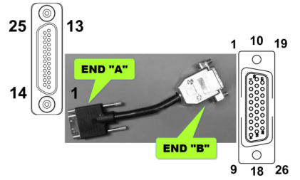
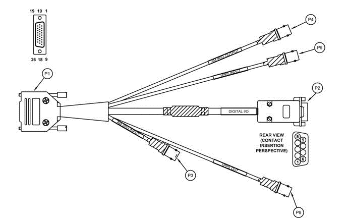
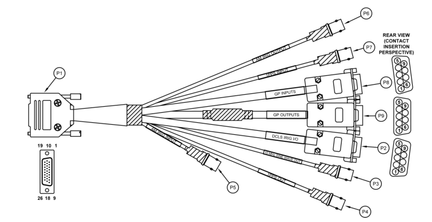

IO821 Pin Mapping — Reference information about the I/O module connector
The IO821 provides a 25-Pin TIMING connector and an optional coaxial input for the GNSS antenna (IO821-GNSS only).
| Pin | Signal | Pin | Signal |
|---|---|---|---|
| 1 | GPO2 External HW Trigger | 2 | Ground |
| 3 | External HW Sync Output | 4 | - |
| 5 | Ground | 6 | GPI0 Edge Detection Input |
| 7 | External 1PPS Input | 8 | Ground |
| 9 | IRIG AM Output | 10 | IRIG AM Input + |
| 11 | IRIG AM Input - | 12 | IRIG DCLS Output - |
| 13 | IRIG DCLS Output + | 14 | GPO3 External HW Trigger |
| 15 | Ground | 16 | - |
| 17 | - | 18 | Ground |
| 19 | GPI1 Edge Detection Input | 20 | 1PPS Output |
| 21 | Ground | 22 | 10 MHz Output |
| 23 | Ground | 24 | IRIG DCLS Input - |
| 25 | IRIG DCLS Input + |
When the IO821 is used for generating interrupts to trigger the model, the External HW Sync Output produces a 5 V square wave where the rising edge internally produces the interrupt. This square wave can be used to synchronize external systems to the model sample rate.
The adapter cable is used to connect the micro 25-pin timing interface connector on the card to the breakout cable. It is wired 1 to 1.

The breakout cable is used to split the pins of the interface connector to different connectors grouped by functionality.
The basic breakout cable does not make all the functionality of the interface connector available.
Refer to the "Premium Breakout Cable" section below.

The breakout cable provides convenient coaxial and DSUB9 connectors.
| Pin | Signal | Pin | Signal |
|---|---|---|---|
| 1 | Ground | 2 | GPI0 Edge Detection Input |
| 3 | Ground | 4 | IRIG DCLS Input + |
| 5 | IRIG DCLS Input - | 6 | External HW Sync Output |
| 7 | Ground | 8 | - |
| 9 | Ground | BS | Ground |
The premium breakout cable provides more connectors, especially two additional DSUB9 connectors and a 10 MHz Sine Wave output.
By default, the premium breakout cable is not contained in the IO821 package. Contact Speedgoat to order the cable.

| Pin | Signal | Pin | Signal |
|---|---|---|---|
| 1 | - | 2 | Ground |
| 3 | Ground | 4 | IRIG DCLS Input + |
| 5 | IRIG DCLS Input - | 6 | IRIG DCLS Output + |
| 7 | IRIG DCLS Output - | 8 | - |
| 9 | - | BS | Ground |